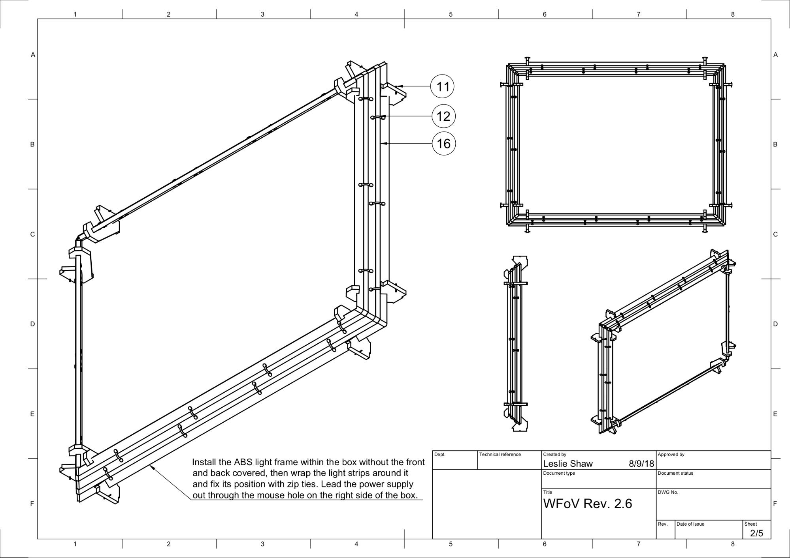

Android 9 introduces ITS-in-a-box revision 2, an automated test system for both wide field of view (WFoV) and regular field of view (RFoV) camera systems in the Camera Image Test Suite (ITS). Revision 1 was designed to test mobile device cameras with an FoV less than 90 degrees (RFoV). Revision 2 is designed to also test cameras that have an FoV greater 90 degrees (WFoV), enabling you to use one ITS-in-a-box system to test different cameras with varying FoVs.
The ITS-in-a-box system consists of a plastic box laser cut from computer-aided design (CAD) drawings, an internal lighting system, a chart tablet, and a device under test (DUT). You can purchase an ITS-in-a-box or build your own.
Purchasing a WFoV ITS-in-a-box
We recommend purchasing a WFoV ITS-in-a-box from one of the following qualified vendors.
- Acu Spec, Inc.
990 Richard Ave, Ste 103, Santa Clara, CA 95050
fred@acuspecinc.com - MYWAY, Inc
4F., No. 163, Fu Ying Rd., New Taipei City, Taiwan
sales@myway.tw
Building a WFoV ITS-in-a-box
This section includes step-by-step instructions for assembling a WFoV ITS-in-a-box (revision 2) that can test cameras with a wide field of view (greater than 90 degrees).
Overview
The WFoV ITS-in-a-box consists of a device under test (DUT), a chart tablet, an internal lighting system, and a plastic box that is laser cut from CAD drawings (shown in Figure 1).
Figure 1. Mechanical drawing of WFoV ITS-in-a-box
Required tools
To get started, download the latest technical drawings for the WFoV ITS-in-a-box, cut the plastic and vinyl pieces, purchase the hardware from the bill of materials (BOM), and gather these tools:
- Phillips head screwdriver
- Pliers
- Wire cutters
- Scissors
- Water spray bottle
- X-acto knife
Step 1: Apply colored vinyl
To apply colored vinyl:
Apply colored vinyl on the smooth side of the acrylonitrile butadiene styrene (ABS) and cut out the necessary openings as shown in Figure 1. Make sure to apply the white vinyl with the large rectangular opening on the tablet side and the black vinyl with the circular opening on the mobile device side of the box. For more information, see wikiHow.
Figure 2. ABS pieces with vinyl applied on the smooth side (interior of the box)
Step 2: Assemble and install the light rail
To assemble and install the light frame structure with LED light strips:
Review the mechanical drawing of the light frame structure.

Figure 3. Light frame structure with LED light strips
Gather the plastic light baffles, light mounts, LED light strip, and zip ties.
Figure 4. Light baffles, light mounts, LED light strips, and zip ties
Snap the plastic light baffles to the light mounts as shown in figure 5. This should be a tight fit.
Figure 5. Plastic light baffles fitted in light mounts
Snap the light mounts to the side panels as shown in figure 6. When complete, the light will shine towards the front corners of the box interior.
Figure 6. Light baffles and mounts snapped onto the side panels
Assemble the side panels. (Optional: Sand the edges of the baffles for a better fit.)
Figure 7. Side panels assembled and screwed together
Wrap the LED strip on the side facing the panel, between the holes used for fastening. (Optional: Use the tape on the back of the LED light strip for easier wrapping.)
Figure 8. LED light strip wrapped around the baffles
Wrap the light strips around the baffles twice, use zip ties to tie down the strip, and snap the ends together.
Figure 9. Zip ties holding the LED light strips in place
Figure 10. LED lights wrapped around the baffles twice and exiting through side exit
Figure 11. Zip ties showing on the side facing up. LED strips are on the other side.
Step 3: Assemble tablet and phone mounts
To assemble the tablet and phone mounts:
Review the mechanical drawing of the tablet mount.
Figure 12. Mechanical drawing of tablet mount
Gather the parts as shown in figure 13.
Figure 13. Tablet and phone mounts with screws, plungers, vinyl caps, and nuts
Cut the push-on vinyl cap by ⅓ of its length and push it onto the end of the plunger. This ensures the plunger mechanism can be retracted and locked.
Figure 14. Plunger with adjusted push-on cap
Screw the plungers onto the mounts.
Figure 15. Tablet and phone mounts with plungers attached
Step 4: Final assembly
To assemble the WFoV ITS box:
Gather the front aperture plates and screw the smaller plate with the square on top of the larger plate as shown in figure 16.
Figure 16. Front aperture plates screwed together with 4-40 screws
Tape the front and back panels to the rest of the box.
Figure 17. WFoV box with sides screwed together and the front and back panels taped
Check that the power adapter is 12V, 5A. Anything below 12V will not work; anything below 5A may affect the brightness level of the lights.
Figure 18. 12V, 5A power adapter
Using a digital lux tester, test the lux of the LED lights to make sure they are at the appropriate level. The YF-1065 by Contempo Views is used in this example.
Figure 19. YF-1065 by Contempo Views
Place the light meter on the tablet side and turn it to 2000 lux to measure the light. The lux should be around 100 to 130. Anything significantly lower will be too dim for the tests and can lead to test failures.
Figure 20. Lux meter measuring light from the side with tablet mount
Follow the appropriate step depending on the lux value measured:
- If the light is at the correct level, screw the front and back plates into place.
- If the light is not at the correct level, check the LED and power supply part number.
Mount the phone mount on the aperture plate and the tablet mount on the opposite side with screws and nuts.
Figure 21. Phone mount (left) and tablet mount (right)
Figure 22. Assembled WFoV box: rear view (left) and front view (right)
Revision history
The following describes the changes made to the WFoV ITS-in-a-box.
Revision 2.7
- Switched light in the BOM (#16) to UL listed LED tape for better manufacturing consistency.
- Switched power supply in the BOM (#17) to the same source as #16.
- Revised the tablet mount to be 35mm wider to match the tablet opening (page 4 on mechanical drawing)
- Revised the front clamp hole spacing (distance) to align with the clamp slot length (page 5 on mechanical drawing)
- Reduced the front aperture circle diameter by 20mm to match the RFoV ITS-in-a-box (revision 1) (page 5 on mechanical drawing)
Revision 2.6 (released internally)
- Made a correction to the mechanical drawing
Revision 2.5
- Simplified tablet holder to be similar to the phone mount
- Used a sandblast finish instead of an anodized finish to reduce costs
- Corrected specifications for LED lights on the BOM
Revision 2.4
- Switched from acrylic to ABS material to reduce shipping damage
- Removed 3D printing elements and replaced them with laser-cut ABS to reduce costs
- Changed the box handles to use ABS instead of being a separate item to purchase on the BOM